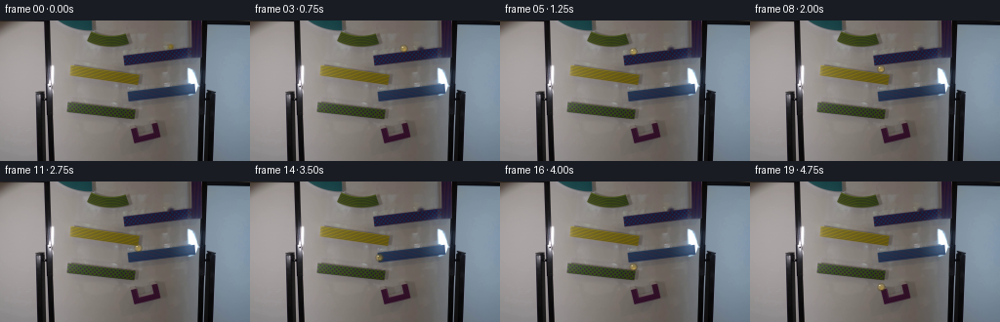
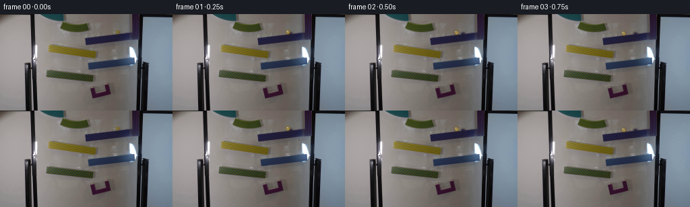

CODING AGENTS AS PIXEL WORLD MODELS
traex/GPT-5.6-Sol · 0107
点击播放 · 原生 RGB 像素
逐轮保存的候选
回放视频、检查图与代码变化。
每份候选均可单独播放。实际图片检查记录在下方工具轨迹中。
候选 01播放与检查图
点击播放 · 原生 RGB 像素


展开代码变化
--- 上一保存版本
+++ 本次保存版本
@@ -0,0 +1,122 @@
+"""Generate a locked-camera marble-run continuation from first_frame.png."""
+from pathlib import Path
+
+import cv2
+import numpy as np
+from PIL import Image
+
+import artifact_io
+
+
+CASE_DIR = Path(__file__).resolve().parent
+
+
+def remove_starting_marble(rgb: np.ndarray) -> np.ndarray:
+ """Fill the tiny initial marble location from its immediate surroundings."""
+ bgr = cv2.cvtColor(rgb, cv2.COLOR_RGB2BGR)
+ # The marble occupies x=171..177, y=24..29. A compact mask preserves the
+ # dark-blue ramp immediately below it.
+ mask = np.zeros(rgb.shape[:2], np.uint8)
+ cv2.ellipse(mask, (174, 26), (5, 4), 0, 0, 360, 255, -1)
+ clean = cv2.inpaint(bgr, mask, 3, cv2.INPAINT_TELEA)
+ return cv2.cvtColor(clean, cv2.COLOR_BGR2RGB)
+
+
+def over(frame: np.ndarray, color, alpha: np.ndarray) -> None:
+ """Alpha composite a constant RGB color in-place."""
+ a = np.clip(alpha, 0.0, 1.0)[..., None]
+ frame[:] = frame * (1.0 - a) + np.asarray(color, np.float32) * a
+
+
+def draw_glass_marble(base: np.ndarray, cx: float, cy: float,
+ contact: bool = True, falling: bool = False) -> np.ndarray:
+ """Render a small translucent yellow glass sphere with soft scene lighting."""
+ frame = base.astype(np.float32).copy()
+ h, w = frame.shape[:2]
+ yy, xx = np.mgrid[0:h, 0:w].astype(np.float32)
+ r = 4.15
+
+ # Very subtle contact shadow. During a fall it is weaker and stretched,
+ # which keeps the airborne positions readable without changing the scene.
+ sx = cx + 0.9
+ sy = cy + (2.8 if contact else 4.0)
+ sh = np.exp(-(((xx - sx) / 3.5) ** 2 + ((yy - sy) / (1.18 if contact else 1.5)) ** 2) * 1.6)
+ sh *= 0.25 if contact else 0.10
+ over(frame, (34, 31, 20), sh)
+
+ d = np.sqrt((xx - cx) ** 2 + (yy - cy) ** 2) / r
+ # One-pixel antialiased circular coverage.
+ cover = np.clip((1.10 - d) * 4.8, 0.0, 1.0)
+
+ # Warm transmitted light; glass remains partially transparent to the ramp.
+ interior = cover * np.clip((1.02 - d) * 1.8, 0.0, 1.0) * 0.34
+ over(frame, (202, 161, 39), interior)
+
+ # Dark amber rim is strongest toward the lower/right edge.
+ ring = cover * np.clip((d - 0.62) / 0.34, 0.0, 1.0)
+ directional = np.clip(0.72 + 0.22 * (xx - cx) / r + 0.17 * (yy - cy) / r, 0.45, 1.0)
+ over(frame, (78, 62, 20), ring * directional * 0.66)
+
+ # Golden refraction and a tiny caustic near the lower edge.
+ glow = np.exp(-(((xx - (cx + 0.65)) / 2.2) ** 2 + ((yy - (cy + 0.85)) / 1.6) ** 2) * 1.3)
+ over(frame, (223, 176, 42), glow * cover * 0.26)
+ caustic = np.exp(-(((xx - (cx + 0.5)) / 1.35) ** 2 + ((yy - (cy + 2.0)) / 0.58) ** 2) * 1.8)
+ over(frame, (248, 207, 83), caustic * cover * 0.50)
+
+ # Soft rectangular-window reflection at the upper left of the sphere.
+ hi = np.exp(-(((xx - (cx - 1.25)) / 0.92) ** 2 + ((yy - (cy - 1.45)) / 0.72) ** 2) * 1.7)
+ over(frame, (255, 246, 190), hi * cover * 0.78)
+ pin = np.exp(-(((xx - (cx - 1.65)) / 0.42) ** 2 + ((yy - (cy - 1.72)) / 0.40) ** 2) * 2.2)
+ over(frame, (255, 255, 228), pin * cover * 0.64)
+
+ # Mild vertical blur only while in fast free fall, suggestive of real-time
+ # camera exposure rather than a duplicate/ghost marble.
+ if falling:
+ trail = np.exp(-(((xx - cx) / 2.3) ** 2 + ((yy - (cy - 2.6)) / 4.7) ** 2) * 1.7)
+ trail *= np.clip(1.0 - d, 0.0, 1.0) * 0.06
+ over(frame, (189, 150, 38), trail)
+
+ return np.clip(frame + 0.5, 0, 255).astype(np.uint8)
+
+
+def trajectory():
+ # Centers sampled at 4 fps. The marble first rolls down-left on the upper
+ # navy ramp, then makes short physical drops to the alternating ramps.
+ # This follows the visible ramp surfaces rather than moving the camera.
+ return [
+ (174.0, 26.0, True, False), # frame 0 is supplied unchanged
+ (171.0, 26.4, True, False),
+ (165.0, 27.1, True, False),
+ (157.0, 28.3, True, False),
+ (147.0, 29.8, True, False),
+ (136.0, 31.4, True, False),
+ (129.0, 37.5, False, True),
+ (128.5, 48.5, True, False),
+ (133.5, 49.3, True, False),
+ (140.0, 50.4, True, False),
+ (141.0, 57.5, False, True),
+ (141.0, 67.7, True, False),
+ (136.5, 68.3, True, False),
+ (132.0, 68.9, True, False),
+ (132.0, 77.4, False, True),
+ (132.5, 86.5, True, False),
+ (136.0, 87.2, True, False),
+ (136.5, 97.3, False, True),
+ (136.5, 106.8, True, False),
+ (133.8, 107.7, True, False),
+ ]
+
+
+def main() -> None:
+ first = np.asarray(Image.open(CASE_DIR / "first_frame.png").convert("RGB"), dtype=np.uint8)
+ assert first.shape == (144, 256, 3)
+ clean = remove_starting_marble(first)
+ frames = [first.copy()]
+ for cx, cy, contact, falling in trajectory()[1:]:
+ frames.append(draw_glass_marble(clean, cx, cy, contact, falling))
+ video = np.stack(frames).astype(np.uint8)
+ artifact_io.save(video, CASE_DIR)
+
+
+if __name__ == "__main__":
+ main()
可观测工具轨迹
实际执行的命令与返回图片。
命令 1exit 0
/bin/bash -lc "cat GENERATION_RULES.md && printf '\\n---PROMPT---\\n' && cat prompt.txt"
命令 2exit 127
/bin/bash -lc "find . -maxdepth 2 -type f -printf '%p %s bytes\\n' | sort && file first_frame.png"
命令 3exit 0
/bin/bash -lc "sed -n '1,240p' artifact_io.py && python3 - <<'PY'
from PIL import Image
import numpy as np
im=np.array(Image.open('first_frame.png').convert('RGB'))
print(im.shape,im.dtype, im.min(axis=(0,1)),im.max(axis=(0,1)),im.mean(axis=(0,1)),im.std(axis=(0,1)))
# corners / grid patches mean
for y in range(0,144,12):
print(y, ['%3d,%3d,%3d'%tuple(im[y:y+12,x:x+16].mean((0,1)).astype(int)) for x in range(0,256,16)])
PY"命令 4exit 0
/bin/bash -lc "python3 - <<'PY'
try: import cv2; print('cv2',cv2.__version__)
except Exception as e: print(e)
try: import scipy; print('scipy',scipy.__version__)
except Exception as e: print(e)
try: import sklearn; print('sklearn')
except Exception as e: print(e)
PY
python3 - <<'PY'
from PIL import Image
import numpy as np, colorsys
from scipy import ndimage
im=np.array(Image.open('first_frame.png').convert('RGB'))
# HSV via cv2
import cv2
hsv=cv2.cvtColor(im,cv2.COLOR_RGB2HSV)
for name,mask in [
('yellow',(hsv[:,:,0]>15)&(hsv[:,:,0]<40)&(hsv[:,:,1]>70)&(hsv[:,:,2]>70)),
('sat',(hsv[:,:,1]>80)&(hsv[:,:,2]>50)),
('brightyellow',(hsv[:,:,0]>18)&(hsv[:,:,0]<38)&(hsv[:,:,1]>100)&(hsv[:,:,2]>120)),
('dark',(hsv[:,:,2]<60)),
]:
lab,n=ndimage.label(mask)
objs=ndimage.find_objects(lab)
comps=[]
for i,s in enumerate(objs,1):
if s:
area=(lab[s]==i).sum()
if area>=3:
ys,xs=np.where(lab==i); comps.append((area,(xs.min(),ys.min(),xs.max(),ys.max()),(round(xs.mean(),1),round(ys.mean(),1))))
print('\\n',name,mask.sum(),sorted(comps,reverse=True)[:30])
# Print top saturated pixel coordinate/color
sat=hsv[:,:,1]
inds=np.argpartition(sat.ravel(),-100)[-100:]
for k in inds[np.argsort(sat.ravel()[inds])[-30:]]:
y,x=divmod(int(k),256); print((x,y),im[y,x].tolist(),hsv[y,x].tolist())
PY"命令 5exit 0
/bin/bash -lc "cat > .tmp/analyze.py <<'PY'
import cv2, numpy as np
from PIL import Image
from scipy import ndimage
im=cv2.imread('first_frame.png')[:,:,::-1]; hsv=cv2.cvtColor(im,cv2.COLOR_RGB2HSV)
# hue bins for pixels sat>55 v>45, comps area 5
for lo,hi,nm in [(0,8,'red'),(8,18,'orange'),(18,35,'yellow'),(35,50,'green'),(50,80,'green2'),(80,105,'cyan'),(105,135,'blue'),(135,170,'magenta'),(170,180,'red2')]:
mask=(hsv[:,:,0]>=lo)&(hsv[:,:,0]<hi)&(hsv[:,:,1]>55)&(hsv[:,:,2]>45)
lab,n=ndimage.label(mask)
out=[]
for i in range(1,n+1):
yy,xx=np.where(lab==i); a=len(xx)
if a>=5:
colors=im[yy,xx].mean(0); out.append((a,tuple(map(int,(xx.min(),yy.min(),xx.max(),yy.max()))),tuple(colors.astype(int)),tuple(np.round((xx.mean(),yy.mean()),1))))
print(nm,sorted(out,reverse=True)[:20])
# Hough circles parameter sweeps
G=cv2.cvtColor(im,cv2.COLOR_RGB2GRAY)
G=cv2.GaussianBlur(G,(5,5),1)
for p2 in [18,15,12,10,8]:
cs=cv2.HoughCircles(G,cv2.HOUGH_GRADIENT,1,minDist=5,param1=80,param2=p2,minRadius=2,maxRadius=12)
print('circles',p2, None if cs is None else np.round(cs[0]).astype(int).tolist()[:50])
# Hough lines
ed=cv2.Canny(G,30,100)
ls=cv2.HoughLinesP(ed,1,np.pi/180,threshold=18,minLineLength=15,maxLineGap=5)
L=[]
for z in ls[:,0]:
x1,y1,x2,y2=map(int,z); le=((x2-x1)**2+(y2-y1)**2)**.5; ang=np.degrees(np.arctan2(y2-y1,x2-x1)); L.append((round(le,1),round(ang,1),(x1,y1,x2,y2)))
print('lines')
for x in sorted(L,reverse=True)[:100]: print(x)
PY
python3 .tmp/analyze.py"命令 6exit 0
/bin/bash -lc "python3 - <<'PY'
import numpy as np, cv2
from PIL import Image
from sklearn.cluster import KMeans
im=np.array(Image.open('first_frame.png').convert('RGB'))
h,w=im.shape[:2]
# joint color/position? color only kmeans
pix=im.reshape(-1,3)
km=KMeans(14,random_state=2,n_init=5).fit(pix[::2])
lbl=km.predict(pix).reshape(h,w); cs=km.cluster_centers_
order=np.argsort(cs.mean(1)); conv={old:i for i,old in enumerate(order)}
print([(i, np.round(cs[o]).astype(int).tolist(), int((lbl==o).sum())) for i,o in enumerate(order)])
chars='0123456789ABCD'
# mode each 4x3 cells
for y in range(0,h,3):
row=''
for x in range(0,w,4):
a=lbl[y:y+3,x:x+4].ravel(); m=np.bincount(a,minlength=14).argmax(); row+=chars[conv[m]]
print(f'{y:03d} '+row)
PY"命令 7exit 0
/bin/bash -lc "python3 - <<'PY'
from PIL import Image
import numpy as np,cv2
im=np.array(Image.open('first_frame.png').convert('RGB')); hsv=cv2.cvtColor(im,cv2.COLOR_RGB2HSV)
for (x0,x1,y0,y1) in [(80,140,7,31),(165,210,4,44),(60,150,42,69),(125,205,60,85),(65,145,82,103),(125,170,103,128)]:
print('\\nCROP',x0,x1,y0,y1)
for y in range(y0,y1):
s=''
for x in range(x0,x1,2):
h,sat,v=hsv[y,x]
if v<40:c='K'
elif sat<20:c='.'
elif sat<45:c='g'
elif h<10 or h>=170:c='R'
elif h<18:c='o'
elif h<35:c='Y'
elif h<50:c='G'
elif h<80:c='T'
elif h<105:c='C'
elif h<135:c='B'
elif h<170:c='M'
else:c='?'
s+=c
print(f'{y:3} {s}')
# exact color rows around circle
print('pixels circle')
for y in range(11,27):
print(y,['%02x%02x%02x'%tuple(im[y,x]) for x in range(120,136)])
PY"命令 8exit 0
/bin/bash -lc "cat > generate.py <<'PY'
\"\"\"Generate a locked-camera marble-run continuation from first_frame.png.\"\"\"
from pathlib import Path
import cv2
import numpy as np
from PIL import Image
import artifact_io
CASE_DIR = Path(__file__).resolve().parent
def remove_starting_marble(rgb: np.ndarray) -> np.ndarray:
\"\"\"Fill the tiny initial marble location from its immediate surroundings.\"\"\"
bgr = cv2.cvtColor(rgb, cv2.COLOR_RGB2BGR)
# The marble occupies x=171..177, y=24..29. A compact mask preserves the
# dark-blue ramp immediately below it.
mask = np.zeros(rgb.shape[:2], np.uint8)
cv2.ellipse(mask, (174, 26), (5, 4), 0, 0, 360, 255, -1)
clean = cv2.inpaint(bgr, mask, 3, cv2.INPAINT_TELEA)
return cv2.cvtColor(clean, cv2.COLOR_BGR2RGB)
def over(frame: np.ndarray, color, alpha: np.ndarray) -> None:
\"\"\"Alpha composite a constant RGB color in-place.\"\"\"
a = np.clip(alpha, 0.0, 1.0)[..., None]
frame[:] = frame * (1.0 - a) + np.asarray(color, np.float32) * a
def draw_glass_marble(base: np.ndarray, cx: float, cy: float,
contact: bool = True, falling: bool = False) -> np.ndarray:
\"\"\"Render a small translucent yellow glass sphere with soft scene lighting.\"\"\"
frame = base.astype(np.float32).copy()
h, w = frame.shape[:2]
yy, xx = np.mgrid[0:h, 0:w].astype(np.float32)
r = 4.15
# Very subtle contact shadow. During a fall it is weaker and stretched,
# which keeps the airborne positions readable without changing the scene.
sx = cx + 0.9
sy = cy + (2.8 if contact else 4.0)
sh = np.exp(-(((xx - sx) / 3.5) ** 2 + ((yy - sy) / (1.18 if contact else 1.5)) ** 2) * 1.6)
sh *= 0.25 if contact else 0.10
over(frame, (34, 31, 20), sh)
d = np.sqrt((xx - cx) ** 2 + (yy - cy) ** 2) / r
# One-pixel antialiased circular coverage.
cover = np.clip((1.10 - d) * 4.8, 0.0, 1.0)
# Warm transmitted light; glass remains partially transparent to the ramp.
interior = cover * np.clip((1.02 - d) * 1.8, 0.0, 1.0) * 0.34
over(frame, (202, 161, 39), interior)
# Dark amber rim is strongest toward the lower/right edge.
ring = cover * np.clip((d - 0.62) / 0.34, 0.0, 1.0)
directional = np.clip(0.72 + 0.22 * (xx - cx) / r + 0.17 * (yy - cy) / r, 0.45, 1.0)
over(frame, (78, 62, 20), ring * directional * 0.66)
# Golden refraction and a tiny caustic near the lower edge.
glow = np.exp(-(((xx - (cx + 0.65)) / 2.2) ** 2 + ((yy - (cy + 0.85)) / 1.6) ** 2) * 1.3)
over(frame, (223, 176, 42), glow * cover * 0.26)
caustic = np.exp(-(((xx - (cx + 0.5)) / 1.35) ** 2 + ((yy - (cy + 2.0)) / 0.58) ** 2) * 1.8)
over(frame, (248, 207, 83), caustic * cover * 0.50)
# Soft rectangular-window reflection at the upper left of the sphere.
hi = np.exp(-(((xx - (cx - 1.25)) / 0.92) ** 2 + ((yy - (cy - 1.45)) / 0.72) ** 2) * 1.7)
over(frame, (255, 246, 190), hi * cover * 0.78)
pin = np.exp(-(((xx - (cx - 1.65)) / 0.42) ** 2 + ((yy - (cy - 1.72)) / 0.40) ** 2) * 2.2)
over(frame, (255, 255, 228), pin * cover * 0.64)
# Mild vertical blur only while in fast free fall, suggestive of real-time
# camera exposure rather than a duplicate/ghost marble.
if falling:
trail = np.exp(-(((xx - cx) / 2.3) ** 2 + ((yy - (cy - 2.6)) / 4.7) ** 2) * 1.7)
trail *= np.clip(1.0 - d, 0.0, 1.0) * 0.06
over(frame, (189, 150, 38), trail)
return np.clip(frame + 0.5, 0, 255).astype(np.uint8)
def trajectory():
# Centers sampled at 4 fps. The marble first rolls down-left on the upper
# navy ramp, then makes short physical drops to the alternating ramps.
# This follows the visible ramp surfaces rather than moving the camera.
return [
(174.0, 26.0, True, False), # frame 0 is supplied unchanged
(171.0, 26.4, True, False),
(165.0, 27.1, True, False),
(157.0, 28.3, True, False),
(147.0, 29.8, True, False),
(136.0, 31.4, True, False),
(129.0, 37.5, False, True),
(128.5, 48.5, True, False),
(133.5, 49.3, True, False),
(140.0, 50.4, True, False),
(141.0, 57.5, False, True),
(141.0, 67.7, True, False),
(136.5, 68.3, True, False),
(132.0, 68.9, True, False),
(132.0, 77.4, False, True),
(132.5, 86.5, True, False),
(136.0, 87.2, True, False),
(136.5, 97.3, False, True),
(136.5, 106.8, True, False),
(133.8, 107.7, True, False),
]
def main() -> None:
first = np.asarray(Image.open(CASE_DIR / \"first_frame.png\").convert(\"RGB\"), dtype=np.uint8)
assert first.shape == (144, 256, 3)
clean = remove_starting_marble(first)
frames = [first.copy()]
for cx, cy, contact, falling in trajectory()[1:]:
frames.append(draw_glass_marble(clean, cx, cy, contact, falling))
video = np.stack(frames).astype(np.uint8)
artifact_io.save(video, CASE_DIR)
if __name__ == \"__main__\":
main()
PY
python3 generate.py
python3 - <<'PY'
from pathlib import Path
from PIL import Image
import numpy as np
f=np.stack([np.array(Image.open(f'frames/{i:02d}.png')) for i in range(20)])
orig=np.array(Image.open('first_frame.png').convert('RGB'))
print('shape',f.shape,f.dtype,'frame0 exact',np.array_equal(f[0],orig))
print('changed pixels each:',[(i,int(np.any(f[i]"'!=orig,2).sum())) for i in range(20)])
print('"'outputs',[(p.name,p.stat().st_size) for p in map(Path,['pixels.npz','index.html','inspection.png'])])
# Print brightest yellowish changed coordinate around expected ball for sanity.
import cv2
for i in range(1,20):
d=np.max(abs(f[i].astype(int)-np.array(Image.open('first_frame.png')).astype(int)),2)
y,x=np.unravel_index(np.argmax(d),d.shape)
print(i,(x,y),f[i,y,x].tolist(),int(d[y,x]))
PY"保存候选 1 份；完成命令 8 次；可验证图片返回 0 张。原始 API 响应与完整日志保留在本地。